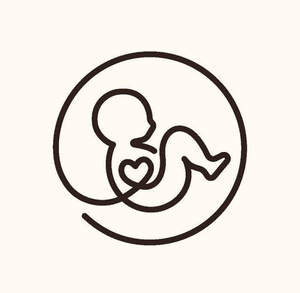
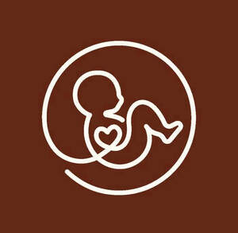

Trade Mark Journal No.2026/009 27 February 2026
UK00004338053 9 February 2026 (5,9,10,42,44)
Mark 1

Mark 2

- Class 5
- Pharmaceuticals, medical and veterinary preparations; Sanitary preparations for medical purposes; Medical preparations; Diagnostic preparations and materials, for medical and veterinary purposes ; Indicators for medical diagnosis; Reactants for medical diagnosis; Fertility enhancement preparations; Male fertility test kits; Preparations for the diagnosis of pregnancy; Preparations for the diagnosis of ovulation; Chemical preparations for the diagnosis of pregnancy; Pregnancy testing preparations for home use; Chemical contraceptives; Oral contraceptives; Ovulation test kits; Testosterone preparations; Medical diagnostic test strips; Genetic identity tests comprised of reagents for medical purposes; Hormones for medical purposes; Birth control sponges; Spermicides for application to condoms; Semen for artificial insemination.
- Class 9
- Scientific, research, audiovisual, optical, weighing, measuring, signalling, detecting, testing, inspecting, life-saving and teaching apparatus and instruments; Apparatus and instruments for recording, transmitting, reproducing or processing sound, images or data; Recorded and downloadable media; Scientific research and laboratory apparatus; Image scanning apparatus; Electronic scanners; Biometric scanners; Apparatus and instruments for medical research; Bioreactors for research use; Diagnostic apparatus for research laboratory use; Research laboratory analyzers for measuring, testing and analyzing blood and other bodily fluids; Mobile application software; Downloadable mobile applications; Educational mobile applications; Software applications for use with mobile devices; Computer software; Educational computer software; Computer application software; Downloadable calendaring software; Downloadable printable calendars, including those related to ovulation; Bioreactors for laboratory use; Medical training simulators; Media software; Downloadable media; Multi-media recordings; Downloadable educational media; Media and publishing software; mobile and computer software relating to the monitoring of fertility; educational mobile and computer software relating to reproduction.
- Class 10
- Surgical, medical, dental and veterinary apparatus and instruments; Sexual activity apparatus, devices and articles; Scanners for medical diagnosis; Ultrasonic apparatus for medical use in diagnosis; Sensor apparatus for medical use in diagnosis; Electric instruments for medical use in the diagnosis of blood; Medical diagnostic instruments; Ultrasonic medical diagnostic apparatus; Diagnostic, examination, and monitoring equipment; Diagnostic apparatus for medical purposes; Diagnostic instruments for medical use; Medical diagnostic, examination, and monitoring equipment; Diagnostic measuring apparatus for medical use; Gynaecological medical instruments for examining women's reproductive organs; Diagnostic apparatus for pregnancy testing; equipment for diagnosis, examination and monitoring of fertility; equipment for diagnosis, examination and monitoring of pregnancy.
- Class 42
- Scientific and technological services and research and design relating thereto; Design and development of computer hardware and software; Medical research; Medical research services; Biological research, clinical research and medical research; Medical research laboratory services; Scientific research for medical purposes; Medical and pharmacological research services; Providing medical research information in the field of genetics; Providing medical and scientific research information in the field of pharmaceuticals and clinical trials; Scientific investigations for medical purposes; Computer programming in the medical field; Design and development of medical technology; Development of diagnostic apparatus; Design of diagnostic apparatus and equipment; Research and development in the field of diagnostic preparations; Research in the field of human reproductive science; research relating to human egg banking; diagnostic tests in the area of human fertility, embryology and pregnancy; diagnostic tests in the area of human hormones; diagnostic research and diagnostic tests relating to pre-implantation genetic screening and pre-implantation genetic diagnosis; information, advisory and consultancy services, all relating to the aforesaid services.
- Class 44
- Medical services; Medical examination; Medical assistance; Medical consultations; Medical counselling; Medical screening; Medical testing; Medical care; Medical counselling services; Medical consultancy services; Medical diagnostic services; Medical imaging services; Medical advisory services; Medical analysis services; Medical ultrasound imaging services; Provision of medical assistance; Conducting of medical examinations; Medical health assessment services; Psychological testing for medical purposes; Blood testing being medical analysis services for diagnostic and treatment purposes provided by medical laboratories; Urine analysis being medical analysis services for diagnostic and treatment purposes provided by medical laboratories; Fertility treatment; Human fertility treatment services; Pregnancy testing; Medical advice in the field of pregnancy; DNA screening for medical purposes; Medical services, namely, in vitro fertilization; consultancy in relation to fertility, the treatment of fertility and pregnancy; providing of medical information in relation to fertility and pregnancy; Medical counselling related to fertility and pregnancy; Genetic counselling; Nutritional counselling; human sperm donation services; sperm bank services; artificial insemination services.
PLAN YOUR BABY LTD
Representative: Stobbs